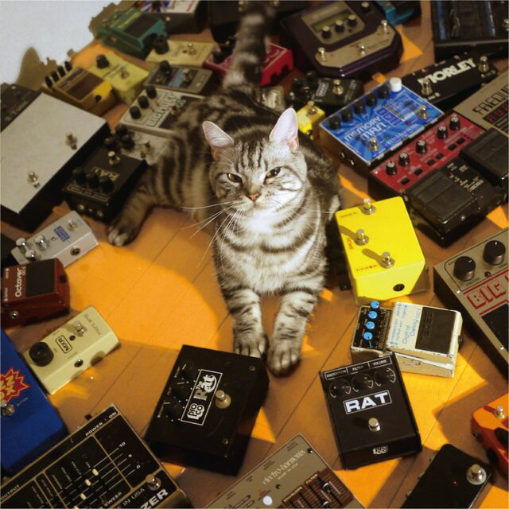

Snow's Garage
Mathematics, the mind, and what moves between them.
I'm Fitzgerald Snow, an undergraduate in Mathematics and Applied Mathematics at Fudan University. I study decision making and emotion with the tools of reinforcement learning and neural modelling, and I keep this garage for research notes, wandering thoughts and photographs.
There is nothing. Only warm, primordial blackness. Your conscience ferments in it — no larger than a single grain of malt.
Research
All research →Writing
-
How do we decide which goals to pursue
Exploring how habitual and goal-directed systems cooperate in choosing goals from countless possibilities.
December 2025 -
情绪是大脑建构的产物
情绪不是对世界的被动反应。它们是大脑基于过往经验，对“当前身体感觉在特定情境下意味着什么”的最佳猜测和行动指南。
August 2025
Current work
Arbitration between model-free and model-based control
Testing whether a simpler, equally intuitive arbitration rule explains behaviour as well as the reliability-based model of Lee et al. (2014). With Dr. Ruyuan Zhang, Shanghai Jiao Tong University.
Constraint satisfaction with graphical models
How do people solve map colouring or sudoku? An early-stage study of whether the brain implements belief propagation. With Dr. Qianli Yang, East China Normal University.
Five lab presentations, from reward prediction errors to planning as inference.
Thought Cabinet
Open the cabinet →Am I the ocean or in it — where is Snow's wandering mind? A cabinet of fragments: passages copied out, half-formed arguments, and notes to a future self.
Gallery
Enter the gallery →About

Hi! I'm Fitzgerald Snow, currently an undergraduate student at Fudan University, majoring in Mathematics and Applied Mathematics. I have a keen interest in the intersection of mathematics, artificial intelligence, and the human mind.
I'm also a lover of literature and philosophy, and an amateur photographer.
This website is a space for me to share and document my thoughts, interests, and what I'm currently working on. I hope you'll find something here that interests you or resonates with you.
Contact
Have an existential crisis? Neurons on fire? Feel free to reach out.
- Emailzzzzbbbbtttt20873@gmail.com
- Universitybtzhang23@m.fudan.edu.cn
- GitHubgithub.com/Fitzgerald-Snow